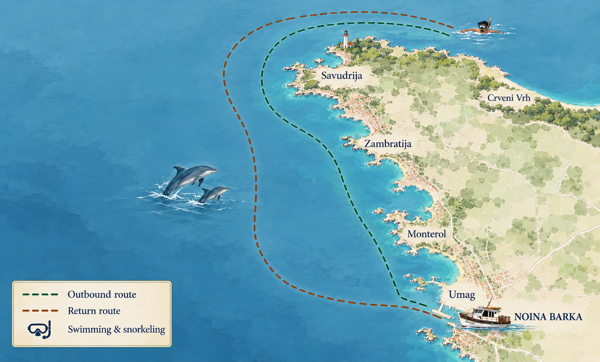

We will start our trip from Umag harbor and head towards the open sea. During the trip, we will have the opportunity to see dolphins in their natural habitat. We will also make a stop for swimming and snorkeling, where you can enjoy the crystal-clear waters of the Adriatic Sea. After the swim, we will continue our journey and return to Umag harbor.

| Trip details | Information |
|---|---|
| Duration | |
| Price for adults | |
| Price children under 12 years (12 not included) | |
| Price children aged under 3years | |
| INCLUDED |
|
| Swimming stop |